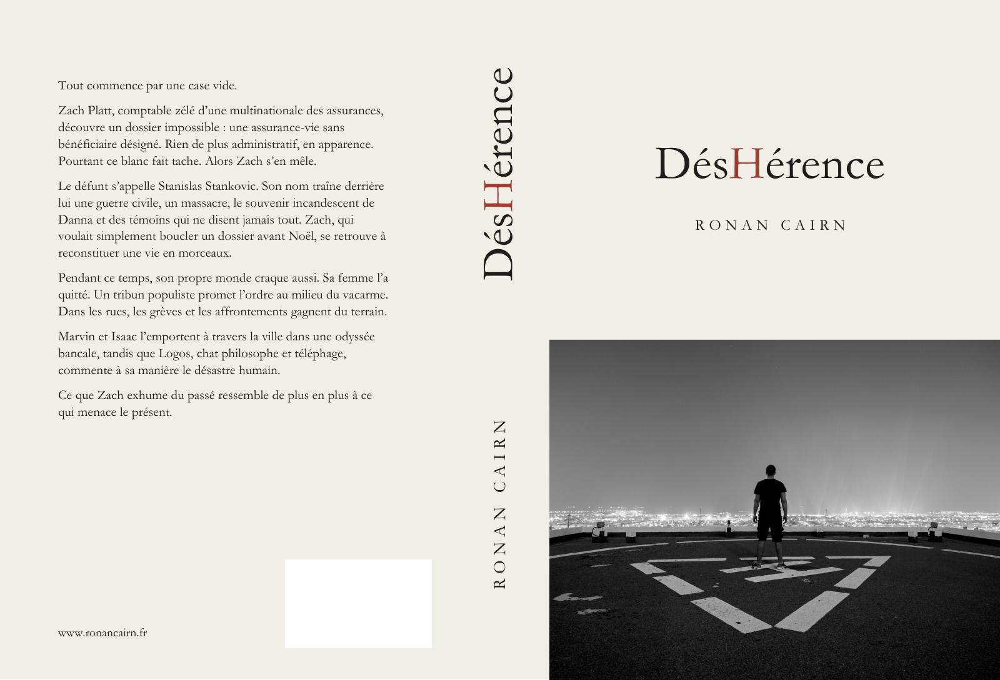

Roman · DÉSHÉRENCE
Ronan
Cairn
Écrivain
Héritages vacants.
Fantômes politiques.
Démocraties fatiguées.
Le roman
DÉSHÉRENCE
Roman
Tout commence par une case vide.
Zach Platt, comptable zélé d’une multinationale des assurances, découvre un dossier impossible : une assurance-vie sans bénéficiaire désigné. Rien de plus administratif, en apparence. Pourtant ce blanc fait tache. Alors Zach s’en mêle.
Le défunt s’appelle Stanislas Stankovic. Son nom traîne derrière lui une guerre civile, un massacre, le souvenir incandescent de Danna et des témoins qui ne disent jamais tout. Zach, qui voulait simplement boucler un dossier avant Noël, se retrouve à reconstituer une vie en morceaux.
Pendant ce temps, son propre monde craque aussi. Sa femme l’a quitté. Un tribun populiste promet l’ordre au milieu du vacarme. Dans les rues, les grèves et les affrontements gagnent du terrain.
Marvin et Isaac l’emportent à travers la ville dans une odyssée bancale, tandis que Logos, chat philosophe et téléphage, commente à sa manière le désastre humain.
Ce que Zach exhume du passé ressemble de plus en plus à ce qui menace le présent.

Une question, un mot ?